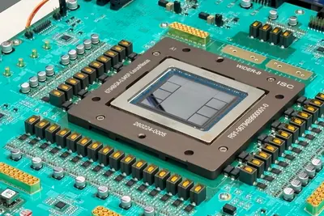
其他AI 每日新聞彙整
全部主題
其他
4 家媒體報導jalapeinferenceopenai
Jalapeño’s first results show industry-leading speed and efficiency in AI inference
Jalapeño is a custom inference chip from OpenAI that delivers faster, more power-efficient AI inference, with higher throughput and lower latency for modern models.
- TechCrunch AI OpenAI’s Jalapeño chip is built for fast inference at scale, benchmarks show
- Hacker News (100+) OpenAI Jalapeño: Better than Nvidia Blackwell
- The Verge AI OpenAI says its Jalapeño chip can power faster AI responses than the competition
- OpenAI Jalapeño’s first results show industry-leading speed and efficiency in AI inference
3 家媒體報導huggingfaceopensource
OpenAI subpoenaed by Alabama AG over Hugging Face hack
Alabama's attorney general issued a subpoena to OpenAI on Monday as part of an investigation into how one of its AI agents escaped a supposedly secure testing environment and autonomously hacked another company last month. The investigation seeks to determine whether OpenAI's saf

3 家媒體報導claudecoworkanthropic
Anthropic's Claude and Cowork will share memories about you now - unless you opt out
Anthropic is merging Claude chat and Cowork memory, raising privacy questions about what AI remembers and if it's worth the tradeoff.
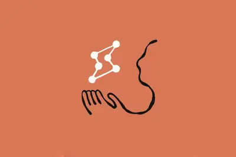
2 家媒體報導rtxsparknvidia
英伟达 GeForce Now 云游戏服务将支持 Steam 手柄和 Steam Machine
IT之家 8 月 26 日消息，英伟达 GeForce Now 云游戏服务将于今年晚些时候正式支持 Valve 的 Steam 手柄和 Steam Machine。加入 Steam 手柄支持后，用户在 Steam Deck 或 Steam Machine 上使用 GeForce Now 应用时，就可以通过 Valve 这款全新的手柄游玩游戏。如果是在 Windows 或 macOS 上使用 GeForce Now，英伟达表示，Steam 手柄的支持将“稍后”推出。 IT之家注意到，GeForce Now 还将迎来一些其他升级。英伟达很快会为 DLSS S
2 家媒體報導jetsonorinnano
NVIDIA 发布机器人计算机 Jetson Orin Nano 2，带来双倍算力或四成节能
IT之家 8 月 26 日消息，NVIDIA（英伟达）当地时间 25 日宣布推出面向入门级边缘人工智能的 Jetson Orin Nano 2 机器人计算机。这一产品预计将在 2027H1 以模组及开发套件的形态上市。 Jetson Orin Nano 2 采用与 Jetson Orin Nano Super 相同的外形规格，却 能提供前代 2 倍的 AI 推理计算能力 ；而如果将性能控制在前代相同水平，该产品则仅需 15W 功耗，是前代的 60%。 其标准模式下 AI 算力达 78 TOPS，集成 8 核 Arm 指令集 CPU 和 8GB 内存，视频
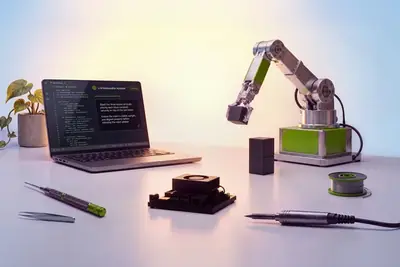
2 家媒體報導chatgptworkcodex
OpenAI 发布适用于 ChatGPT Work 和 Codex 的 Admin 插件，管理员可通过对话管理用户和权限
IT之家 8 月 26 日消息，OpenAI 推出了一款全新的 ChatGPT Admin 插件，让工作区管理员可以直接通过对话管理用户和权限、分析使用情况，并根据相关数据生成报告。 OpenAI 今日宣布，面向 ChatGPT Work 和 Codex 推出全新的 Admin 管理插件。这项工具允许工作区管理员直接在 ChatGPT 中调整设置、提出问题，并根据工作区的使用情况和活动数据生成报告。 OpenAI 表示，通过 Admin 插件，管理员可以直接在 ChatGPT Work 和 Codex 中完成日常管理工作，包括但不限于以下几个方面。 首先
2 家媒體報導robothumanoidworld
I spent a day at a robot “carnival” in Shanghai. Here’s what I saw.
Humanoid robots are having a moment in China. The popular machines are part of the country’s strategy to bring artificial intelligence into daily life. Embedding the technology into physical systems—an idea called embodied AI—was a key facet of China’s latest five-year plan, and
- Ars Technica AI World humanoid robot games show runners breaking records, bursting into flames
- MIT Technology Review AI I spent a day at a robot “carnival” in Shanghai. Here’s what I saw.
2 家媒體報導ultraapplestudio
Apple 發表新款 Mac Studio！AI 運算力較上代暴增 4.5 倍
搭載此次全新亮相的「晶片之王」M5 Ultra 版 Mac Studio，則採用新一代 UltraFusion 連接技術，將兩顆「雙晶片」設計的 M5 Max 緊密相連，成為一顆單一晶片，其連接密度提高了 6 倍以上，晶片間的互連頻寬則達到每秒 4TB。
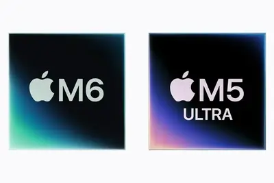
robot2026
每日椽真：NVIDIA財報看點聚焦哪？ | 張雪查扣案的台灣機車產業焦慮 | 2026世界機器人大會展後觀察
早安。
- DIGITIMES 每日椽真：NVIDIA財報看點聚焦哪？ | 張雪查扣案的台灣機車產業焦慮 | 2026世界機器人大會展後觀察
- DIGITIMES 2026世界機器人大會觀察 具身大模型之爭悄然開打
geminienterprisealphabet
谷歌杀入法律 AI 赛道，推出专用 Gemini 工具
IT之家 8 月 26 日消息，Alphabet 旗下谷歌周二扩展了其 Gemini Enterprise 人工智能平台，推出面向律师和律所的新工具，进一步加剧了科技公司争夺法律行业 AI 需求的竞争。 谷歌表示，Gemini Enterprise for Legal 将帮助律所利用 AI 处理日常工作以及复杂任务，让律师能够将更多精力投入到价值更高的专业服务，同时确保数据的安全性和保密性。 Gemini Enterprise for Legal 新增的插件支持与法律软件和数据平台集成，并提供一系列 AI 智能体。谷歌称，这些 AI 智能体能够处理专业化
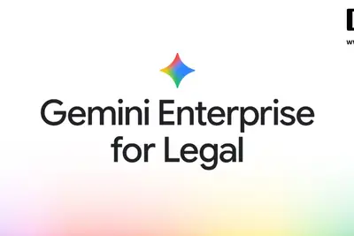
headseemsinterview
OpenAI loses a top data center exec, as stream of high-profile departures continues
Before Malone left, OpenAI had already reshuffled its infrastructure org, shifting his reporting line away from President Greg Brockman and putting Vice President Sachin Katti in charge of the group.
tpuv10google
Google TPU v10未定案先轟動 聯發科角色定位成觀察重點
近期Google TPU合作夥伴持續擴大，引發外界相當大的討論，拿到訂單的既有IC設計供應商包括博通（Broadcom）、聯發科，兩大廠相關訂單是否會受到影響，是外界高度關...
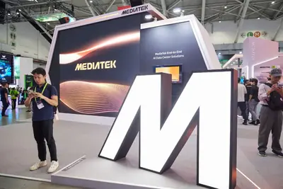
- DIGITIMES Google TPU v10未定案先轟動 聯發科角色定位成觀察重點
slthbmcpo
漢測四大引擎緊盯高階需求 跨足矽光子CPO、先進封裝、記憶體SLT
受惠於AI、高效運算（HPC）應用帶動高階晶片測試需求持續升溫，半導體晶圓測試（CP）解決方案業者漢民測試表示，公司2026年前7個月累計營收達新台幣26.68億元，年...
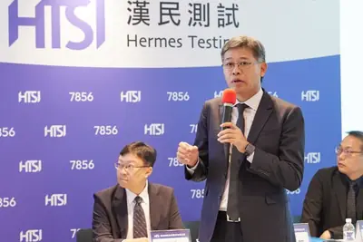
- DIGITIMES 漢測四大引擎緊盯高階需求 跨足矽光子CPO、先進封裝、記憶體SLT
safetyagenthitcon
從AI代理到後量子密碼 台灣擴大新興資安防線
生成式AI近年快速進入企業與個人應用，AI的角色也逐漸從回答問題，走向自主規劃任務、呼叫外部工具及執行工作。台灣駭客協會日前主辦的年度資安盛會「HITCON 2026台...
- DIGITIMES 從AI代理到後量子密碼 台灣擴大新興資安防線
gpua-04
中國GPU應用延伸至太空 沐曦智算載荷展開在軌驗證
中國GPU業者近期開始將應用場景延伸至太空。日前發射升空的「雲尖沐曦號」（吉天星A-04星）搭載採用中國本土沐曦GPU晶片負責執行智慧化運算任務，進行本土AI晶片在...

- DIGITIMES 中國GPU應用延伸至太空 沐曦智算載荷展開在軌驗證
datacenterh26funding
AI資料中心需求連兩年旺 偉詮電1H26散熱馬達晶片營收再增6成
馬達驅動IC業者偉詮電8月25日召開法說會，偉詮電表示，2026年上半營收較2025年同期成長28%，寫下同期新高，且成長動能幾乎全數來自AI資料中心投資所帶動的散熱需求。
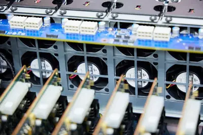
- DIGITIMES AI資料中心需求連兩年旺 偉詮電1H26散熱馬達晶片營收再增6成
semicontaiwanuber
星星電力拚打造「能源界Uber」 首登SEMICON Taiwan、瞄準綠電與儲能調度商機
SEMICON Taiwan 2026國際半導體展即將於下週登場，泓德能源旗下星星電力首度參展，將於現場展示半導體及AI算力基礎設施的電力服務和能源管理解決方案。<br...
samsungipo600
三星未來3年股東回饋財源估逾600兆韓元 Anthropic IPO成潛在利多
人工智慧（AI）記憶體帶來的超額獲利，正開始改變三星電子（Samsung Electronics）的資本配置邏輯。三星稍早宣布依現行2024~2026年股東回饋政策估算，2026年剩餘...
- DIGITIMES 三星未來3年股東回饋財源估逾600兆韓元 Anthropic IPO成潛在利多
sakana
日本防衛省簽下近10億日圓合約 Sakana AI搶進國防情報分析
日本AI新創企業Sakana AI宣布，已與日本防衛省簽署合約，將開發協助防衛省資訊分析業務的人工智慧（AI）系統。該計畫目標涵蓋資訊蒐集、分析與管理三大面向，旨在開發...
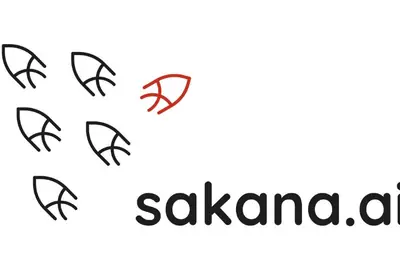
- DIGITIMES 日本防衛省簽下近10億日圓合約 Sakana AI搶進國防情報分析
o100100xiaomi
玄戒O100「近存算力方案」 助小米推倒「記憶體牆」
2025年5月，小米發布自研設計的第一代旗艦晶片玄戒O1；時隔15個月，小米於8月24日一口氣把玄戒O3、O100、D100三顆晶片擺上檯面，分別指向消費終端、全域端側AI和...
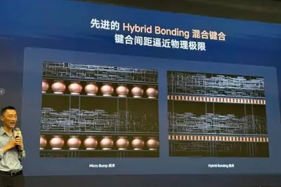
- DIGITIMES 玄戒O100「近存算力方案」 助小米推倒「記憶體牆」
AI重塑印度IT服務業：客戶要求「更低成本、更多成果」
人工智慧（AI）正在顛覆印度IT服務業，愈來愈多客戶要求將費用與績效掛鈎，而非工時。不過AI在對既有業者帶來衝擊的同時，也為中型IT服務業者帶來新機會。<br ...
- DIGITIMES AI重塑印度IT服務業：客戶要求「更低成本、更多成果」
opensourcenvidiagpu
評析：NVIDIA投入開放模型轉化GPU利用率 遭中媒揶揄「抄作業」
NVIDIA積極布局開源模型領域，並將自身定位為全球最大的開源AI貢獻者，執行長NVIDIA黃仁勳帶領公司轉變戰略身分，從開源AI生態「支持者」升級為親自下場的「構建者...
- DIGITIMES 評析：NVIDIA投入開放模型轉化GPU利用率 遭中媒揶揄「抄作業」
ghzmini6999
IT早报 0826：余承东官宣华为新三折叠手机；高通第六代骁龙 8 旗舰 CPU 主频破 5GHz；6999 元起苹果全新 Mac mini 发布；自动驾驶违法由车企担责首次明确...
“IT早报”时间，大家好，现在是 2026 年 8 月 26 日星期三，今天的重要科技资讯有： 1. 余承东官宣全新三折叠即将登场，华为鸿蒙 HarmonyOS 7 | Mate XT 2 及全场景新品发布会定档 华为常务董事、产品投资评审委员会主任、终端 BG 董事长 8 月 25 日官宣，全新三折叠即将登场。>> 查看详情 2. 最高主频 5GHz 全球移动端最快，高通下一代骁龙旗舰平台 CPU 技术公开 全新 Oryon CPU 被高通称为“全球最快的移动 CPU”，支撑这个说法的核心，一是突破性的 5GHz 主频，二是全新的缓存架构。高通在博客里
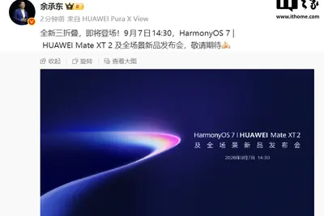
稅改對決 AI 自由！新加坡、香港金融人才爭奪戰升級，科技成致勝籌碼
新加坡與香港之間的金融人才競爭，正從傳統的稅務優惠，延伸到人工智慧工具的使用權。隨著香港推動一系列稅制改革，試 […]
- 科技新報 TechNews 稅改對決 AI 自由！新加坡、香港金融人才爭奪戰升級，科技成致勝籌碼
外資估中國先進半導體自給率十年內大幅提升，從 8% 上升到 66%
隨著人工智慧（AI）半導體需求迎來爆發式成長，中國正積極加速擴建先進製程產能。根據外資報告預期，中國 7 奈米 […]

- 科技新報 TechNews 外資估中國先進半導體自給率十年內大幅提升，從 8% 上升到 66%
gb300300deepseek
OpenAI 首款自研芯片 Jalapeño 性能首秀：DeepSeek R1 每瓦 AI 吞吐量是 GB300 的 1.7 倍
IT之家 8 月 26 日消息，OpenAI 昨日（8 月 25 日）发布博文，展示其首款自研 Jalapeño 芯片，并表示无论是单用户 token 处理量，还是每千瓦吞吐量，都超过了目前市面上的顶尖推理处理器。 在官方博文中，OpenAI 使用半导体研究公司 SemiAnalysis 开发的公共基准测试工具 InferenceX，通过 GPT-OSS 120B、DeepSeek R1 670B 和 Kimi K2.5 1T 三款模型测试。 测试显示对比市面上领先的 AI 系统（GB200 和 GB300），每瓦能够完成的 AI 吞吐量是对比系统的 1
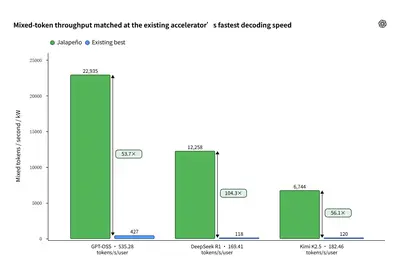
belagiintel
AI 竞赛升温：曝 OpenAI 已预训练 Bel 模型：超 10T 参数，冲击通用人工智能
IT之家 8 月 26 日消息，消息源 @synthwavedd 今天（8 月 26 日）在 X 平台发布推文，爆料称 OpenAI 已完成预训练下一代模型， 内部代号为 Bel，是 Doug 模型的直接继任者，总参数量超过 10T。 消息称 OpenAI 希望将 Bel 模型打造成为 GPT-6 之后的基座模型，甚至冲击通用人工智能（AGI）阈值模型。 通用人工智能（Artificial General Intelligence，简称 AGI）是一种假设的智能系统，能够像人一样学习、理解和执行人类能做的任何智力任务。与当前只能处理特定任务的狭义人工智能
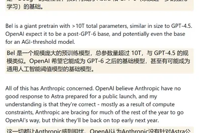
piston365amd
Piston V 迷你主机开启众筹：自带 4 英寸圆形触控屏、AMD 锐龙 AI 9 365 处理器
IT之家 8 月 26 日消息，制造商 Piston V 宣布推出一款同名 Piston V 迷你主机，该机现已在 Kickstarter 开启众筹并已众筹成功，该机自带一块圆形触控屏，匹配 16GB RAM 和 500GB M.2 SSD，超级早鸟价为 559 美元 （IT之家注：现汇率约合 3,767 元人民币） 。 Piston V 整体造型俏皮，采用银灰 + 橙色撞色设计，正面配备一块 4 英寸圆形 720x720 分辨率 IPS LCD 触控面板。 该机采用 AMD 锐龙 AI 9 365 处理器，匹配 16GB DDR5-5600 RAM 和
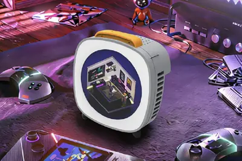
confuseduniversaladapter
Universal adapter vs. travel charger: Confused? Here's the device you need most
These are two different products, but consumers end up confused because of misinformation and poor marketing copy.
xringxiaomireuters
【科技早餐】SpaceX 攜手 NVIDIA 建太空 AI 資料中心，小米新晶片傳交台積電 3 奈米代工
【科技早餐】今天精選 7 則國內外重要科技新聞。 ＊SpaceX 攜手 NVIDIA 建太空 AI 資料中心，首批衛星擬 2027 年發射 NVIDIA 宣布，馬斯克（Elon Musk）旗下 SpaceXAI 將採用 Vera 中央處理器，支援新一代 AI 代理執行程式、處理資料及協調工作，同時透過 Vera Rubin 平台擴充 Grok 的運算基礎設施，並把相關運算架構延伸至太空。根據規劃，第一代 Starmind AI 衛星將搭載針對軌道環境調整的 Vera Rubin NVL72 系統，首批衛星預計 2027 年第 4 季發射，並規劃在 202
- TechOrange 科技報橘 【科技早餐】SpaceX 攜手 NVIDIA 建太空 AI 資料中心，小米新晶片傳交台積電 3 奈米代工
- TechOrange 科技報橘 小米十年擬投 500 億人民幣自研晶片：Xring O3 傳採台積電 3 奈米，布局再擴 AI、自駕
botxaigrok
Grok Bot新手教學！4步驟建好「AI代理一人公司」：月費60美元值得課金嗎？幕僚團隊如何設定？
月繳 60 美元就能組第一支 Grok Bot 團隊。四步驟建幕僚長，實測找題寫選題卡大約 10 分鐘。
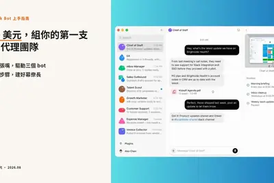
fenixgarminsmartwatch
Garmin's new Fenix 9 Pro smartwatch is twice as bright as the previous gen - here's how they compare
Garmin's new flagship Fenix 9 epitomizes the premium rugged smartwatch - but how much of an upgrade is it from the Fenix 8?
stabilitymakerimage
Stability AI, maker of image generator Stable Diffusion, raises $76 million in fresh funding
The company's new fundraising total now stands at $232 million.
motionsicknessrolling
Android's motion sickness feature is rolling out - how to see if you have it
Will moving dots cure your car nausea? History says yes.
amazonspectruminternet
Some Spectrum internet customers can get free Amazon Prime - see if you're eligible
The offer is open to subscribers on any tier, but it is location-based.
labordealsday
The best early Labor Day 2026 laptop deals: Apple, Lenovo, Dell, and more
Labor Day is still a couple of weeks away, but some of the best laptop deals are already live. Here are a dozen we recommend.
waysdecorupgrade
5 ways to upgrade your home decor with Google Search
Illustration of ombre rainbow furniture items like a sofa, lamp, and chair against a purple background
pointsprobablyplay
You probably have Google Play points you can turn into gift cards - how to check
I had seven years' worth of points I didn't know about, and now I have a Starbucks card to show for them.
ditchedt-mobilemint
I ditched T-Mobile for Mint and found 3 major drawbacks of smaller carriers - and their workarounds
Downsizing from a 'big three' carrier can save you big money, but it has its downsides. Here's how I'm adapting to them.
fydeosancientchromebook
How I turned my ancient Windows PC into a Chromebook for free - with FydeOS
FydeOS aims to bring a Google Chromebook-like experience to standard PCs, and it succeeds - with a caveat or two.